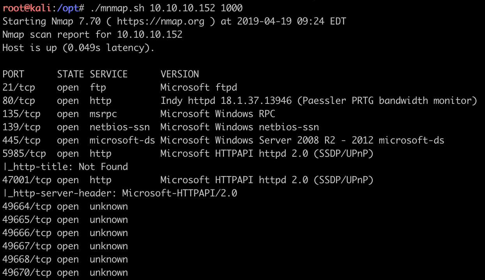
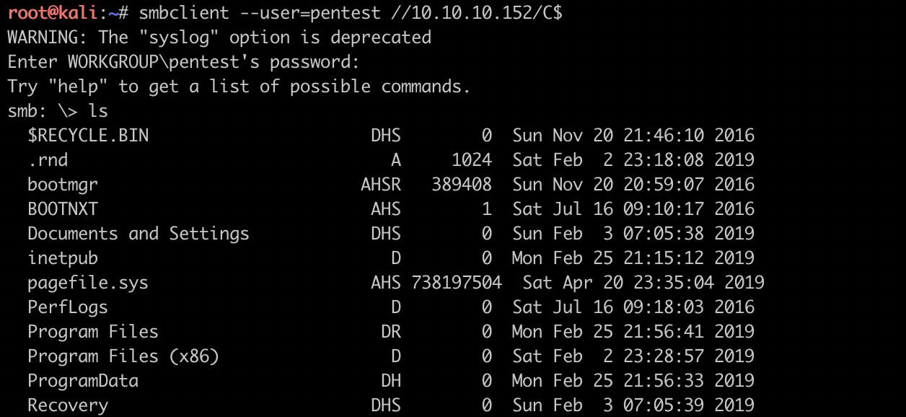

简介
PRTG是windows下机器性能监控的一款软件, 与zabbix、promethues属于同类产品, 在办公网、开放网、生产网中大面积部署, 该靶机通过ftp匿名访问与PRTG CVE-2018-9267漏洞的组合, 实现从搜索信息登陆到利用cve创建管理员账号读取最终flag, 思路一般, 但是这里用到的猜登陆密码、PRTG软件十分贴近真实环境, 作为我打的第一个windows靶机, 还是很赞的.
文章目录
- ftp
- cve+smbclient
最近组合了一下masscan和nmap, 好像之前的文章也提到了, 但是没有放代码, 本文末贴上该代码. 依旧是先扫端口./mnmap.sh 10.10.10.152 1000

端口大致分为: ftp、web、smb、msrpc四类, 操作系统应该是server 2008 R2
smb 有smb端口的化, 肯定要试试cve-2017-0144(永恒之蓝, ms17-010) 这个漏洞了, 万一进去了呢, 但让不会有人出这么傻的靶机, 真实环境下就有可能了哦. smb最终无法直接利用, 考虑后续用smbclient访问共享文件系统.
msrpc msrpc不是太熟悉, google之后发现135上的DCOM接口可能存在漏洞, 尝试之后也失败
ftp 拿到windows自己的ftp服务, 自然是优先匿名登陆, 然后找rce cve利用一下了, 然后在ftp里, 找到了user.txt, 获取普通用户flag
ftp
拿到普通用户flag之后, 开始用ftp配合PRTG文件的数据目录ProgramData/Paessler/PRTG Network Monitor/搜索PRTG站点相关的信息, 然后找到了配置文件, 查看配置文件之后发现prtgadmin账号和加密后的密码, 天真的我开始找如何破解, 这一找找了好几个小时, 然后看到一个bak后缀的配置文件, bak是backup的意思, 所以查看该文件, 发现了一组账号和密码prtgadmin, PrTg@admin2018. 经过尝试发现可用PrTg@admin@2019进入PRTG WEB站点.
这里必须给自己提个醒, 搜集信息阶段的重点是搜集信息, 遇到需要深入探究的信息先放一边, 搜集完之后再深入做爆破等尝试.
cve+smbclient
经过之前的信息收集, 在exploit-db上找到了PRTG 18.2.38之前版本中的一个RCE漏洞, 但是需要登陆才能触发, 结合ftp搜集阶段收集的账号信息, 成功触发rce, 创建administrator权限的账号, 然后利用smbclient登陆445端口的smb服务查看对应的flag即可, 最后在Desktop中找到root.txt

mnmap
masscan -p0-65535 --rate=$2 $1 2>/dev/null | awk -F' ' '{print $4}'| awk -F'/' 'BEGIN {ans=""} {if(ans=="") ans=$1; else ans=ans","$1;} END{print ans}' | xargs -I {} nmap -sS -sV --script vuln -A -p{} $1
nmap扫描参数根据个人喜好自行添加